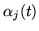

To determine the parameters of a HMM it is first necessary to make a rough guess at what they might be. Once this is done, more accurate (in the maximum likelihood sense) parameters can be found by applying the so-called Baum-Welch re-estimation formulae.
Chapter 8 gives the formulae used in HTK in full detail. Here the basis of the formulae will be presented in a very informal way. Firstly, it should be noted that the inclusion of multiple data streams does not alter matters significantly since each stream is considered to be statistically independent. Furthermore, mixture components can be considered to be a special form of sub-state in which the transition probabilities are the mixture weights (see Fig. [*]).
Thus, the essential problem is to estimate the means and variances of a HMM in which each state output distribution is a single component Gaussian, that is
Since the full likelihood of each observation sequence
is based on the summation of all possible state sequences,
each observation vector
 contributes to the computation
of the maximum likelihood parameter values for each state
contributes to the computation
of the maximum likelihood parameter values for each state  .
In other words, instead of assigning each observation vector
to a specific state as in the above approximation, each
observation is assigned to every state in proportion to
the probability of the model being in that state when the
vector was observed. Thus, if denotes the probability
of being in state
.
In other words, instead of assigning each observation vector
to a specific state as in the above approximation, each
observation is assigned to every state in proportion to
the probability of the model being in that state when the
vector was observed. Thus, if denotes the probability
of being in state  at time
at time  then the
equations 1.11 and 1.12 given above become the
following weighted averages
then the
equations 1.11 and 1.12 given above become the
following weighted averages
Equations 1.13 and 1.14 are the Baum-Welch re-estimation formulae for the means and covariances of a HMM. A similar but slightly more complex formula can be derived for the transition probabilities (see chapter 8).
Of course, to apply equations 1.13 and 1.14, the
probability of state occupation must be calculated.
This is done efficiently using the so-called Forward-Backward
algorithm. Let the forward probability1.2
 for some model
 with
with  states be defined as
states be defined as
| (1.17) |
| (1.18) |
| (1.19) |
| (1.20) |
The backward probability
 is defined as
is defined as
| (1.22) |
| (1.23) |
| (1.24) |
Notice that in the definitions above, the forward probability is a joint probability whereas the backward probability is a conditional probability. This somewhat asymmetric definition is deliberate since it allows the probability of state occupation to be determined by taking the product of the two probabilities. From the definitions,
| (1.26) | |||
All of the information needed to perform HMM parameter re-estimation using the Baum-Welch algorithm is now in place. The steps in this algorithm may be summarised as follows
All of the above assumes that the parameters for a HMM are re-estimated from a single observation sequence, that is a single example of the spoken word. In practice, many examples are needed to get good parameter estimates. However, the use of multiple observation sequences adds no additional complexity to the algorithm. Steps 2 and 3 above are simply repeated for each distinct training sequence.
One final point that should be mentioned is that the computation of the forward and backward probabilities involves taking the product of a large number of probabilities. In practice, this means that the actual numbers involved become very small. Hence, to avoid numerical problems, the forward-backward computation is computed in HTK using log arithmetic .
The HTK program which implements the above algorithm is called HREST . In combination with the tool HINIT for estimating initial values mentioned earlier, HREST allows isolated word HMMs to be constructed from a set of training examples using Baum-Welch re-estimation.